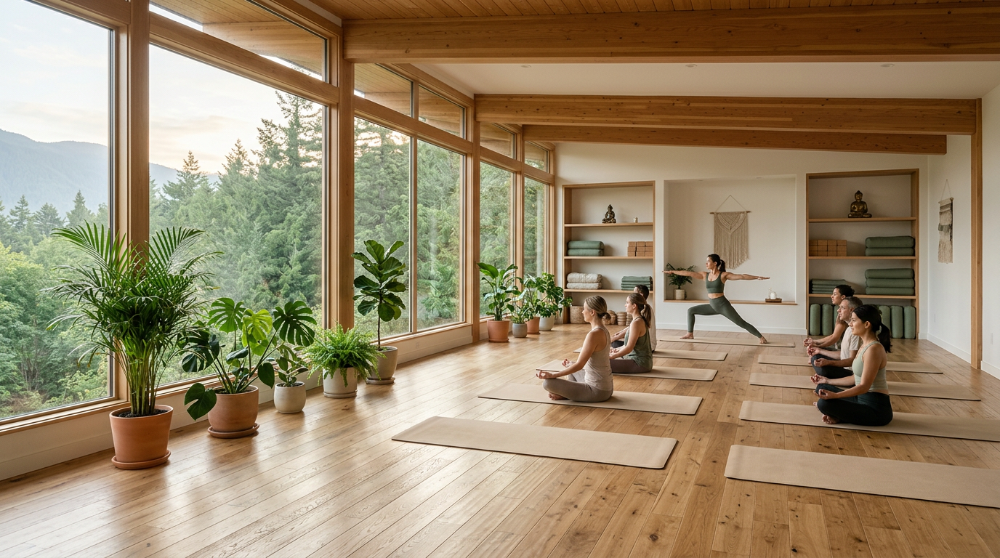
Sensory Experience
오감이 깨어나는
수련의 시간
브레스앤플로우에서의 한 시간은
몸의 모든 감각을 열어주는 여정입니다.
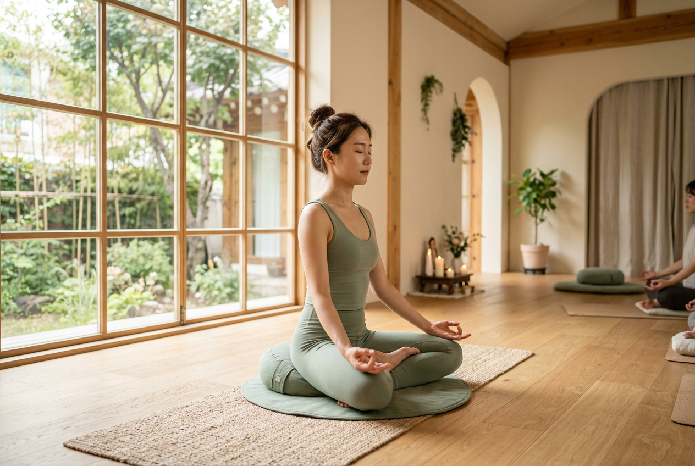
시각 — 빛의 흐름
북향 창으로 들어오는 간접광이 원목 바닥 위에 부드러운 그림자를 그립니다. 시선이 머무는 곳마다 자연의 결이 느껴지도록 설계된 공간입니다.
청각 — 고요의 소리
싱잉볼의 진동이 공간을 채우고, 수련이 깊어질수록 오직 자신의 호흡 소리만 남습니다. 외부 소음을 차단하는 이중 창과 흡음재가 온전한 집중을 돕습니다.
촉각 — 땅의 온기
편백나무 바닥의 미세한 결이 맨발을 통해 전해집니다. 요가 매트 없이도 서고 싶은 바닥, 온돌 난방으로 데워진 겨울의 따뜻함.
후각 — 숲의 향기
유칼립투스와 삼나무 에센셜 오일이 수업 시작 전 공간에 은은히 퍼집니다. 인공 향료가 아닌 순수 식물성 아로마로 호흡을 더 깊게 이끕니다.
Our Teachers
수련을 이끄는 사람들
모든 강사진은 RYT-500 이상의 자격을 갖추고,
각자의 수련 철학으로 수업을 이끕니다.
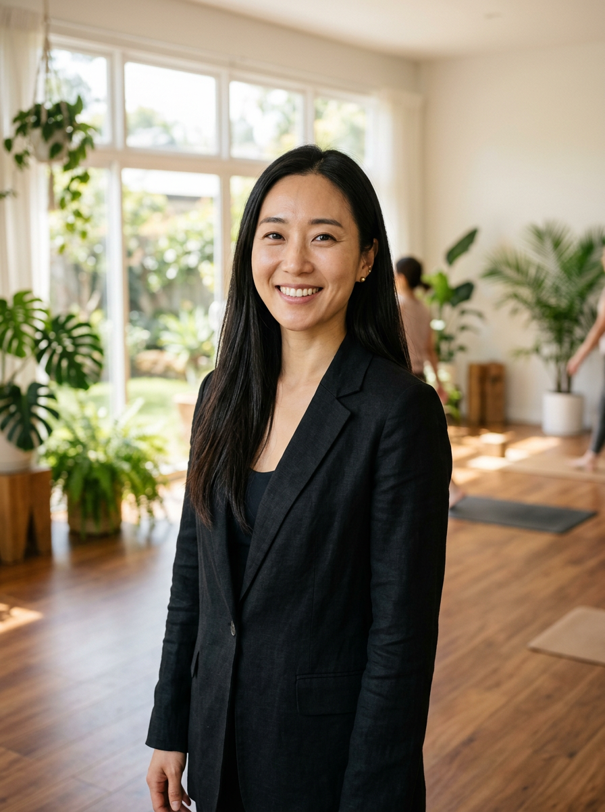
김서연
Lead · Vinyasa Flow
E-RYT 500 · 인도 리시케시 Parmarth Niketan 수료. 흐름과 호흡의 연결을 가장 중요하게 여기며, 12년간 3,000회 이상의 수업을 이끌었습니다.
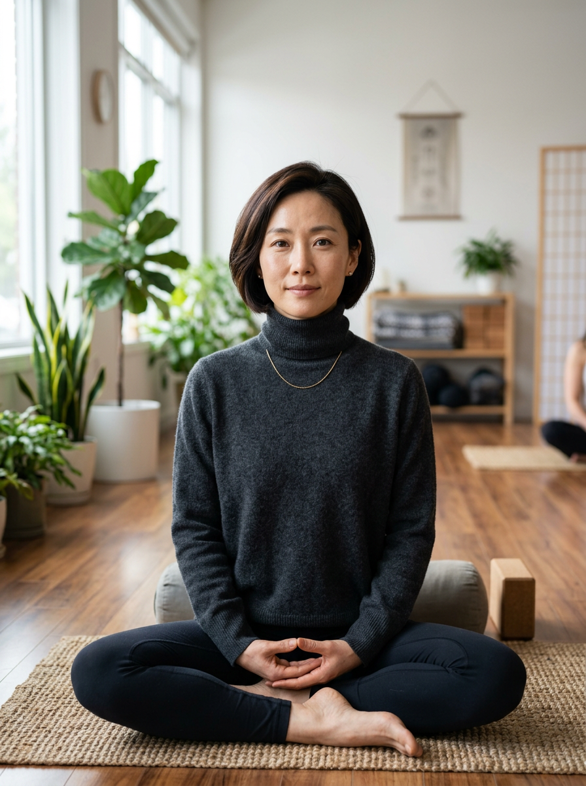
박은지
Yin Yoga & Meditation
RYT 500 · 음요가 300시간 전문과정 수료. 정적인 자세 속에서 깊은 이완을 찾는 8년간의 수련 경험을 나눕니다.
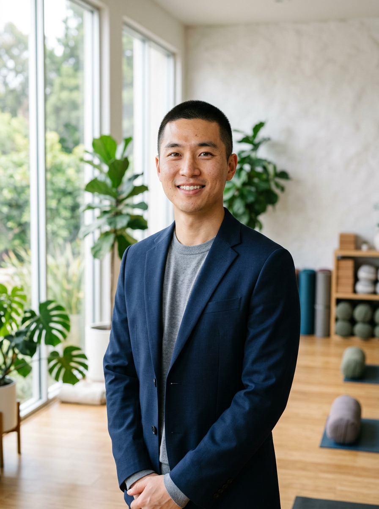
이하린
Prenatal & Restorative
RYT 500 · RPYT(산전전문) 인증. 임산부와 산후 회복을 위한 안전한 수련을 안내합니다.
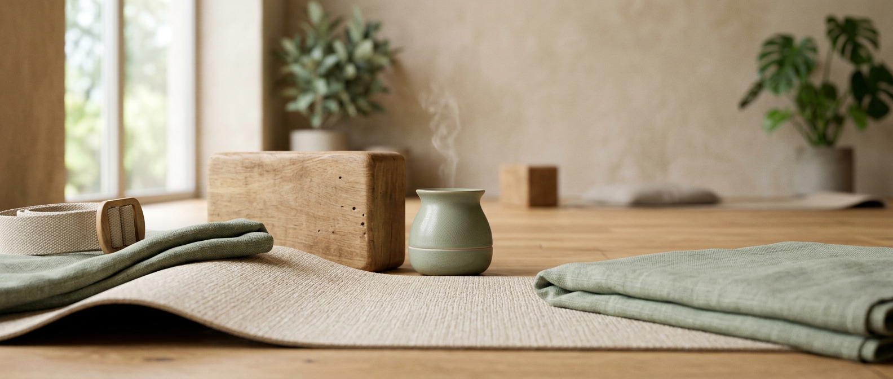
Studio Space
빛이 머무는 공간
북촌 한옥마을에 자리한 3층 독립 스튜디오.
통유리 너머 한옥 지붕 위로 계절이 바뀌고,
편백나무 바닥 위에 당신의 수련이 이어집니다.
Programs
나에게 맞는
수련을 찾다
초보자부터 숙련자까지,
네 가지 프로그램이 당신의 수련을 기다립니다.
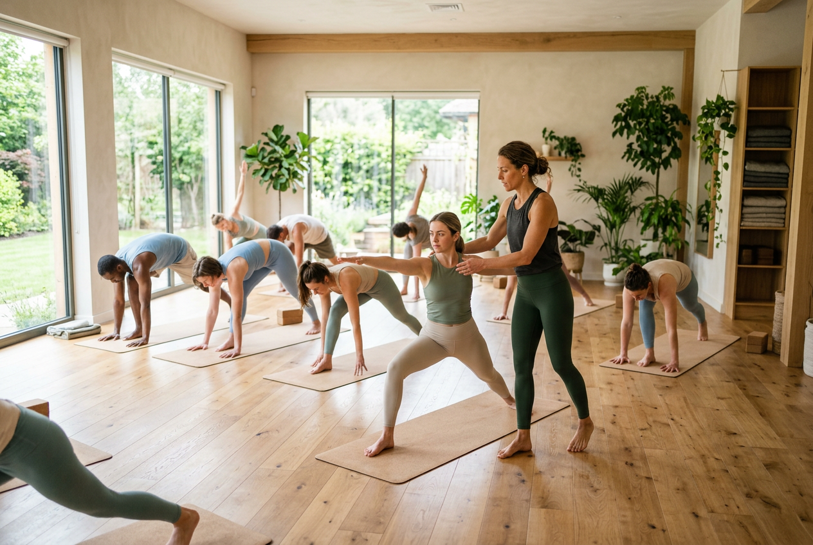
Vinyasa Flow
호흡과 움직임의 연결. 역동적인 시퀀스를 통해 유연성과 근력을 동시에 키웁니다. 매 수업마다 다른 시퀀스로 몸의 가능성을 확장합니다.
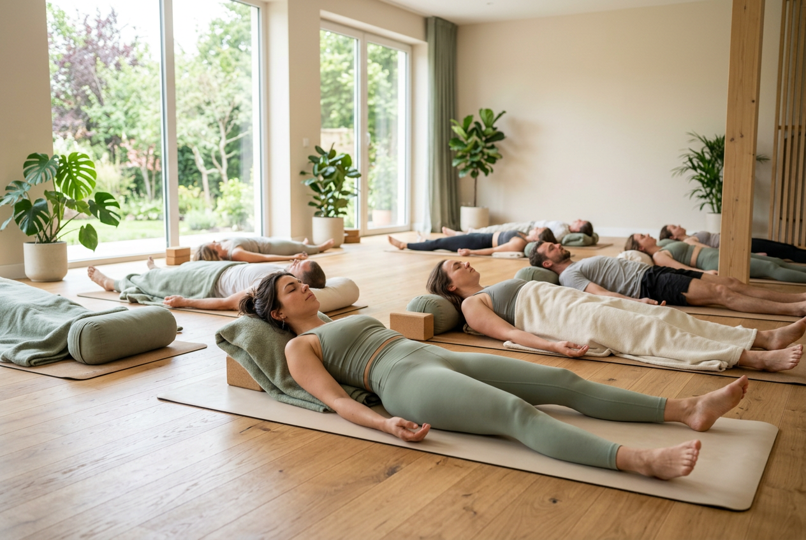
Yin Yoga
3~5분간 하나의 자세에 머무르며 깊은 결합조직을 이완합니다. 고요 속에서 만나는 나 자신.
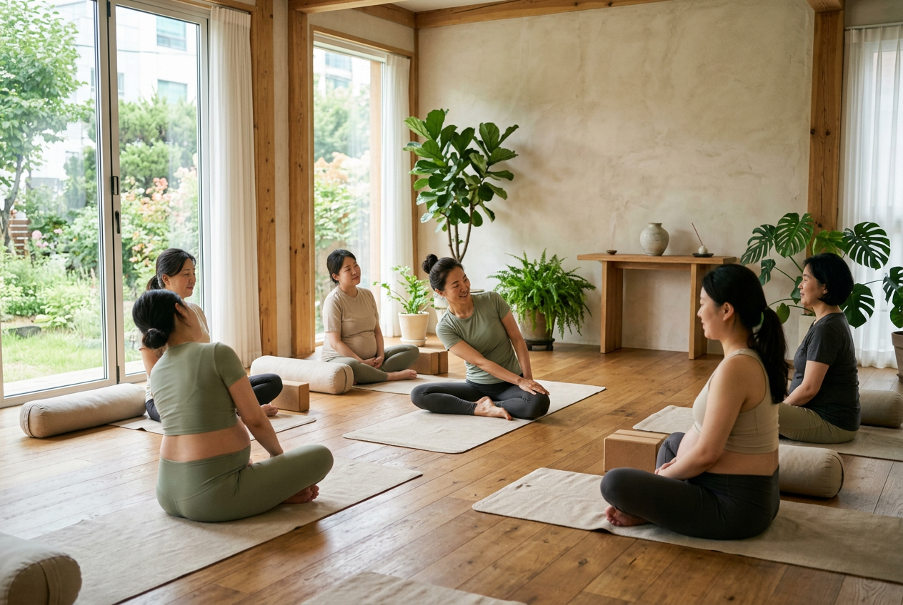
Prenatal Yoga
임신 각 시기에 맞춘 안전한 동작으로 출산을 위한 체력과 정서적 안정을 준비합니다.
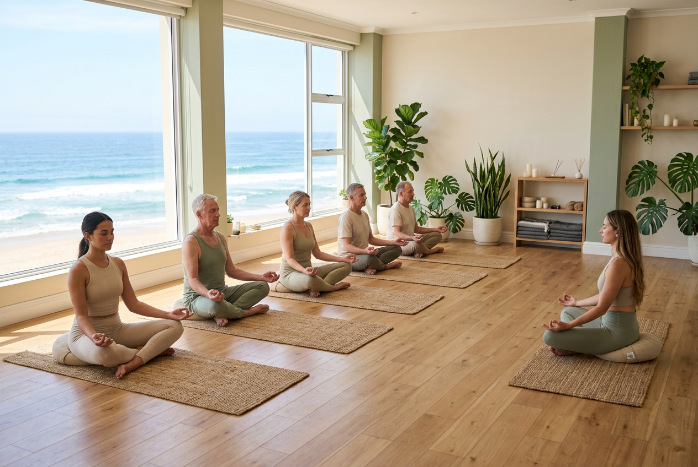
Guided Meditation
호흡 관찰부터 바디스캔까지, 일상에서 바로 활용할 수 있는 마음챙김 명상을 안내합니다. 요가 경험 없이도 참여 가능합니다.
Testimonials
수련생들의 이야기
"출근 전 새벽반 명상을 시작한 지 3개월. 하루를 시작하는 방식이 완전히 달라졌어요. 이 공간의 고요함이 정말 좋습니다."
정유진
새벽 명상반 · 3개월
"산전요가를 찾아 여러 곳을 다녀봤지만, 이하린 선생님의 세심한 가이딩은 차원이 다릅니다. 임신 후기에도 안전하게 수련할 수 있어 마음이 편안했어요. 출산 후에도 이곳에서 회복 요가를 시작할 예정입니다."
최민서
산전요가 · 6개월
"빈야사 수업이 정말 좋아요. 매번 다른 시퀀스라 지루할 틈이 없습니다."
한도윤
빈야사 · 1년
Workshops & Retreats
일상 너머의 수련
제주 봄 리트릿
한라산 중턱, 삼나무 숲 속 펜션에서 보내는 2박 3일. 새벽 명상, 야외 빈야사, 프라나야마 워크숍으로 구성된 자연 속 집중 수련 프로그램입니다.
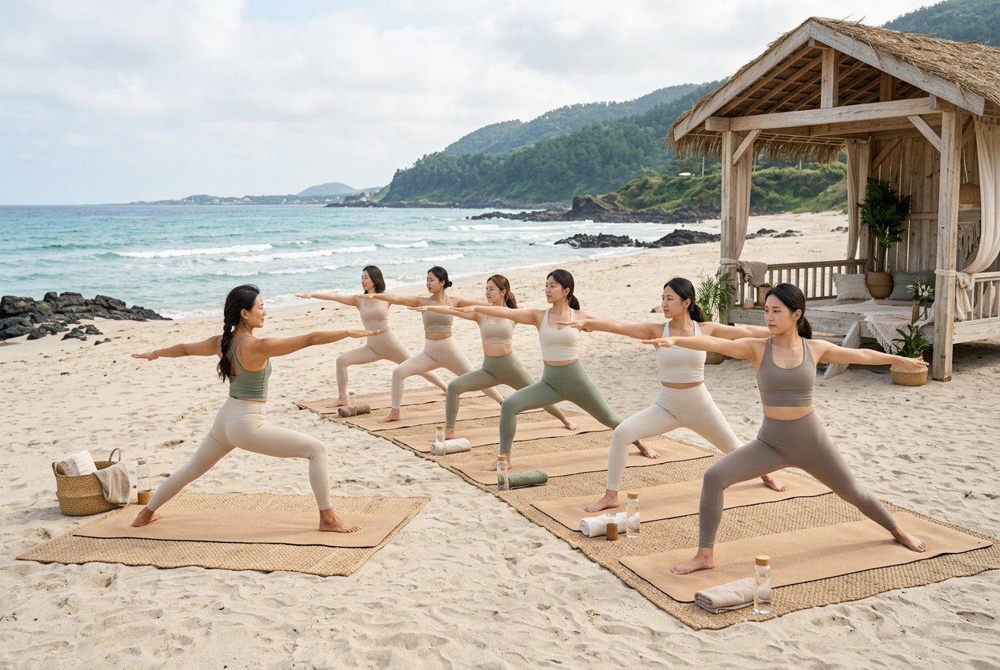
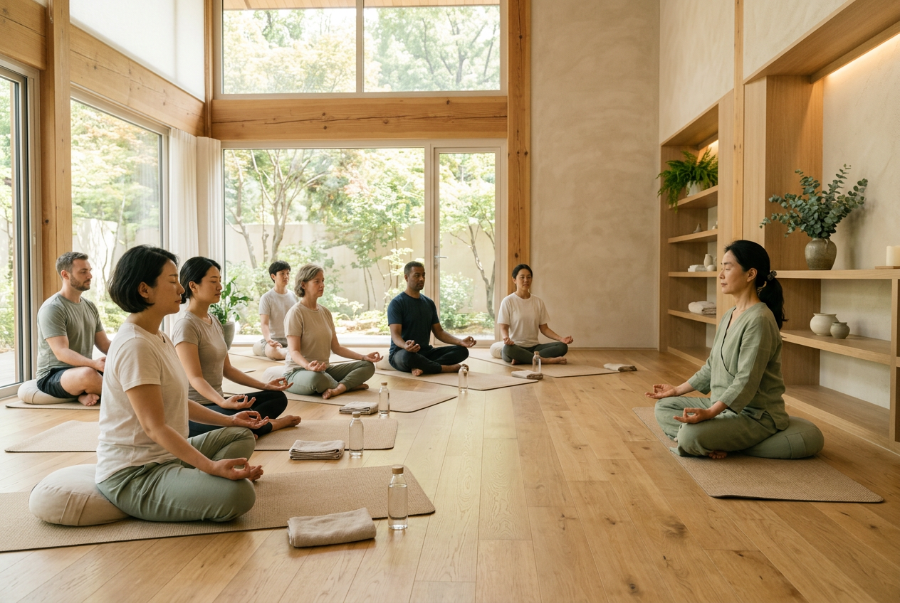
프라나야마 딥다이브
호흡은 요가의 뿌리입니다. 나디 쇼다나, 카팔라바티, 우자이 등 전통 호흡법의 원리와 실습을 깊이 있게 다루는 3시간 집중 워크숍입니다.
Schedule & Pricing
일정과 요금
소규모 수업으로 운영되며,
사전 예약이 필요합니다.
주간 시간표
| 시간 | 월 | 화 | 수 | 목 | 금 | 토 | 일 |
|---|---|---|---|---|---|---|---|
| 06:30 | 명상 | 명상 | 명상 | 명상 | 명상 | — | — |
| 07:00 | 빈야사 | — | 빈야사 | — | 빈야사 | 빈야사 | — |
| 10:00 | — | 음요가 | — | 음요가 | — | 음요가 | 명상 |
| 11:00 | — | — | 산전 | — | 산전 | — | — |
| 19:00 | 빈야사 | 음요가 | 빈야사 | 음요가 | 빈야사 | — | — |
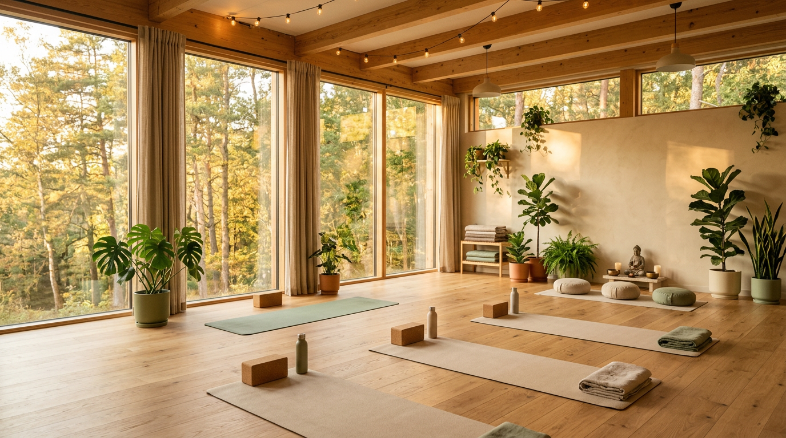